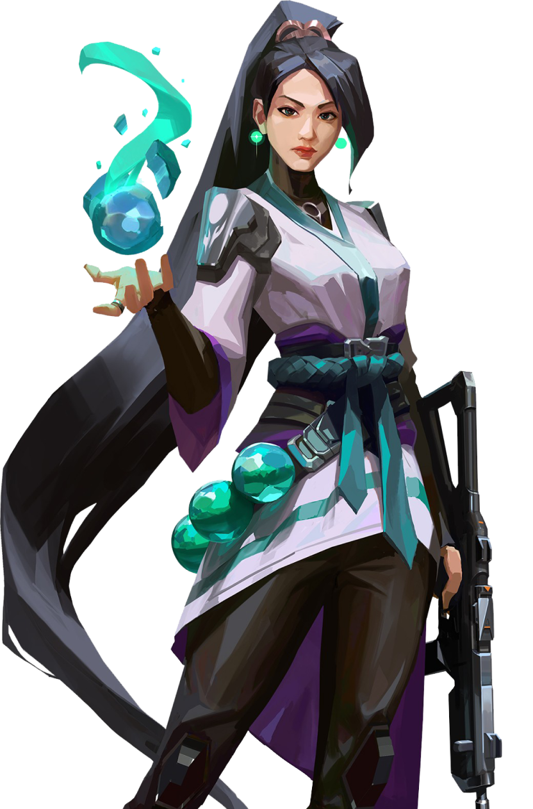

Sadge
Sentulnel from China
Sadge is a Sentulnel agent in Palorant, specializing in healing and defensive abilities to protect her team. Her abilities include healing allies, creating barriers, and slowing down enemies.
-
Barrier Orb - Deploys a solid wall to block enemies.
-
Slow Orb - Creates a slowing field on the ground.
-
Healing Orb - Heals an ally or yourself over time.
-
Resurrection - Revives a fallen ally.